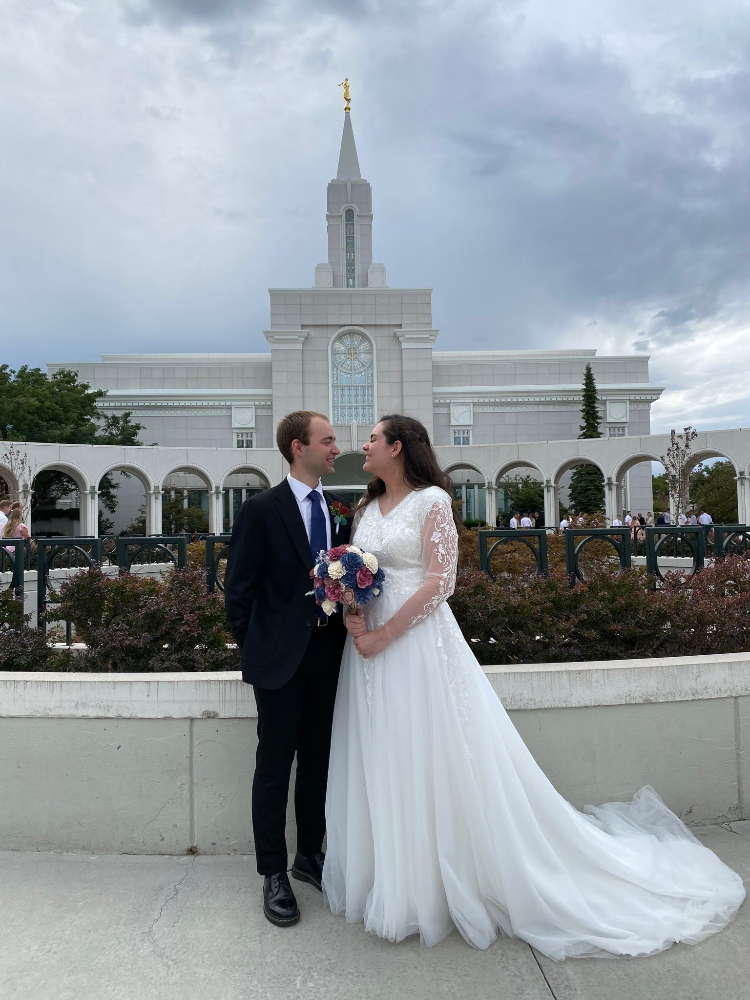

Ideas on Marriage
- Doctrine & Covenants 132
- To the saints who lived in Nauvoo ideas on marriage was intrenched into their culture and their heritage. Men and Woman formed monogamous relationships and anything different was revolting. This made it hard for them to accept the principles of plural marriage. In Joseph's search to understand more fully what the prophets of old did in plural marriage the Lord decided to reveal more clearly his doctrine on the purposes of marriage. Doctrine & Covenants section 132 is the Lord's response to Joseph's questions. The lord starts in the first 28 verses explaining marriage and the rule he has for his children. It isn't until much later in the section that he explains what the prophets did in the past was not the rule but the exception of the rule. The purpose of plural marriage was to raise a righteous seed unto the lord and to test his people.
- Marriage
- The covenant of marriage provides blessings to God's children as it is the way in which together a Man and a Woman might come unto God and become like him. The saints learned more about the purposes of marriage through Joseph Smith's revelation. The covenant was different than just living with a spouse for the rest of your life. It was about honoring and respecting a commitment you made to God and your spouse. Marriage to last forever was needed to be sealed by the holy spirit of promise.
- Personal Experiences
- In studying more about Joseph Smith's teachings on plural marriage and the principles of Eternal Marriage I've learned a lot about God's plan. I've been married for only 3 months now but the verses in Doctrine & Covenants 132 has helped me to better understand the need to respect and care for my spouse. The point of marriage is more than just living with one another it's following God's commandments together. Raising a family and cherishing one another. I think one of the principles that I've tried to focus on is the unity that one can have when married and how that can unify the home and bring the spirit more fully into the lives of those who are married.
